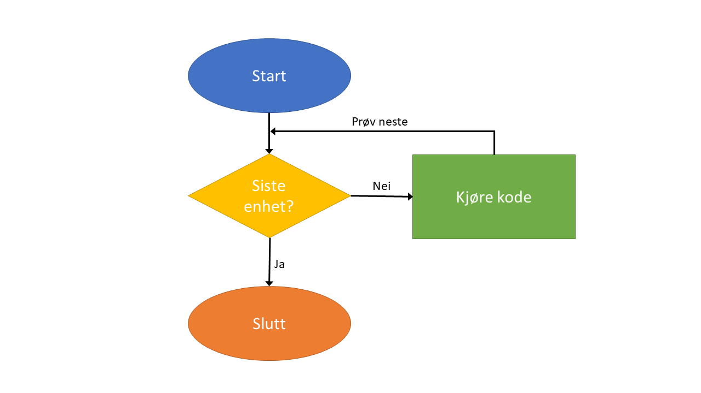
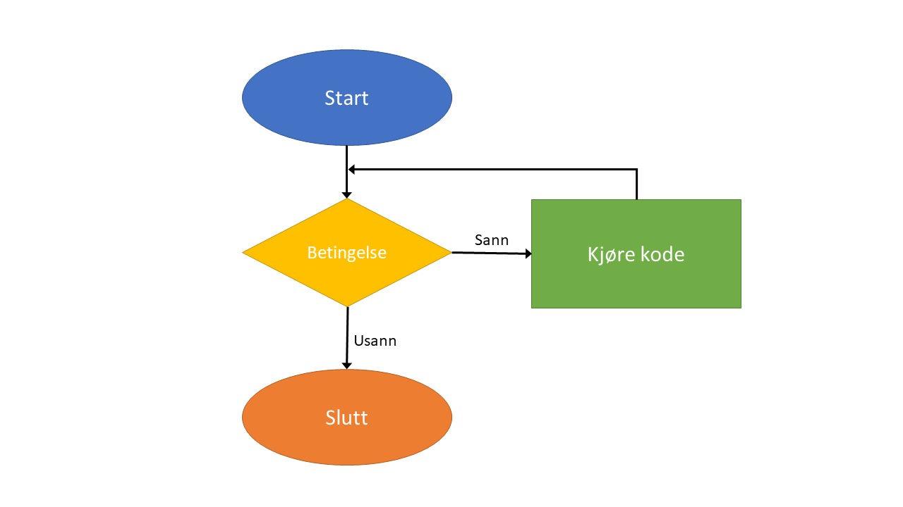

alder <- c(49, 39, 51, 73, 41)
for (i in 1:5){
print(i)
print(alder[i])
}[1] 1
[1] 49
[1] 2
[1] 39
[1] 3
[1] 51
[1] 4
[1] 73
[1] 5
[1] 41For å gjøre den samme prosessen flere ganger kan vi lage løkker. Løkker har noen fordeler:
Vi slipper å skrive den samme koden flere ganger.
Enklere å endre noe verdier/variabler i koden (kun ett sted).
Hvis vi finner en feil, da trenger vi kun å rette det ett sted.
For-løkker brukes til å kjøre gjennom kode et bestemt antall ganger

Det er vanlig å kjøre gjennom en sekvens. For eks:
alder <- c(49, 39, 51, 73, 41)
for (i in 1:5){
print(i)
print(alder[i])
}[1] 1
[1] 49
[1] 2
[1] 39
[1] 3
[1] 51
[1] 4
[1] 73
[1] 5
[1] 41Vi kan også lage løkker med en vektor. For eks:
for (a in alder){
print(a)
}[1] 49
[1] 39
[1] 51
[1] 73
[1] 41While-løkker sjekk en betingelse for å bestemme om det skal fortsette å kjøres. 
For eksempel:
n <- 1
while (n < 10){
print(n)
n <- n + runif(1)
}[1] 1
[1] 1.215509
[1] 1.719224
[1] 1.787002
[1] 2.02973
[1] 2.882941
[1] 3.284548
[1] 4.179464
[1] 4.687117
[1] 4.890747
[1] 5.768935
[1] 6.651896
[1] 7.462691
[1] 8.227248
[1] 9.096581
[1] 9.098579n[1] 10.05743While-løkker brukes ofte i prosesser som har et tilfeldig komponent. I eksempel over, runif() funksjonen trekkes et tilfeldig tall mellom 0 og 1.